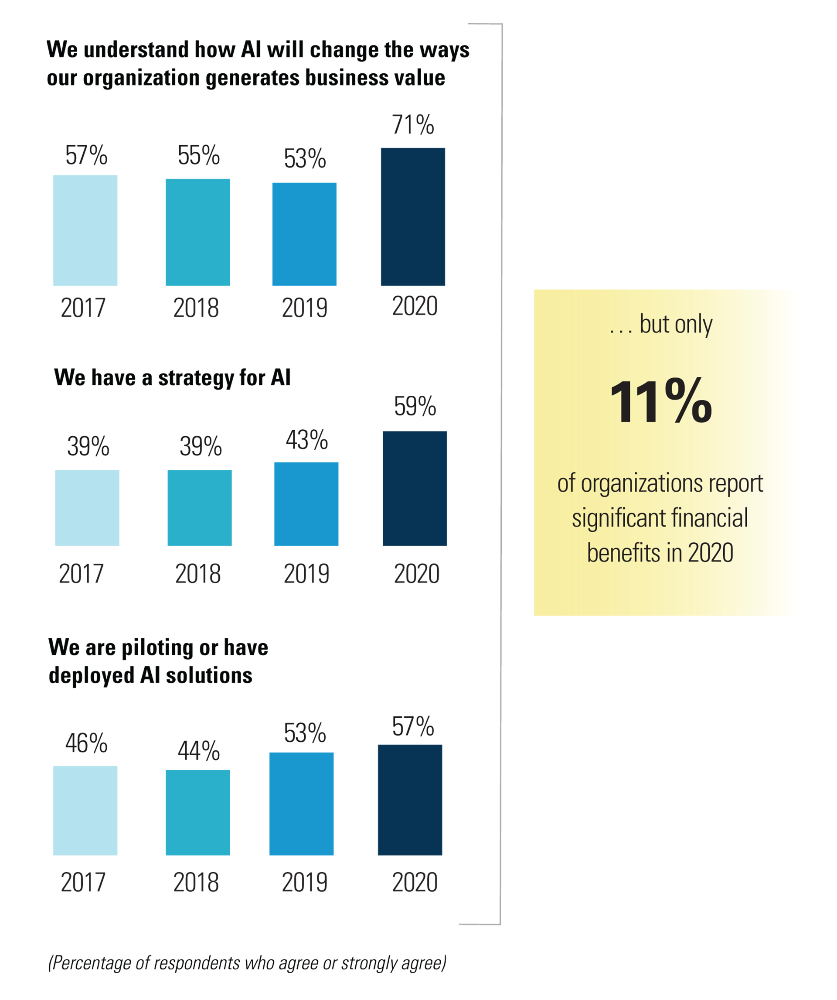
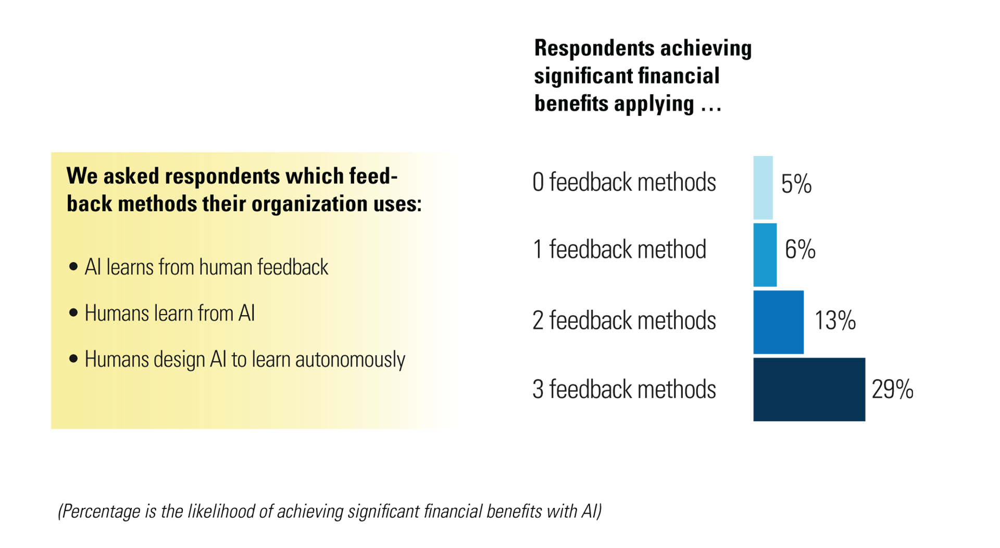
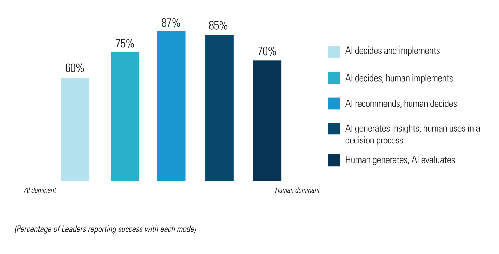
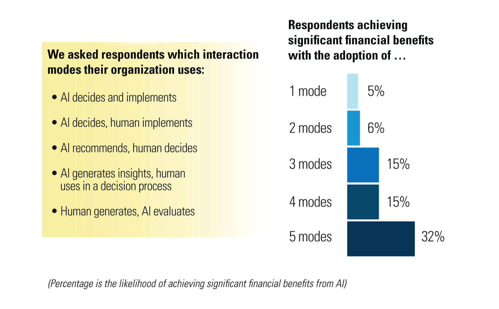
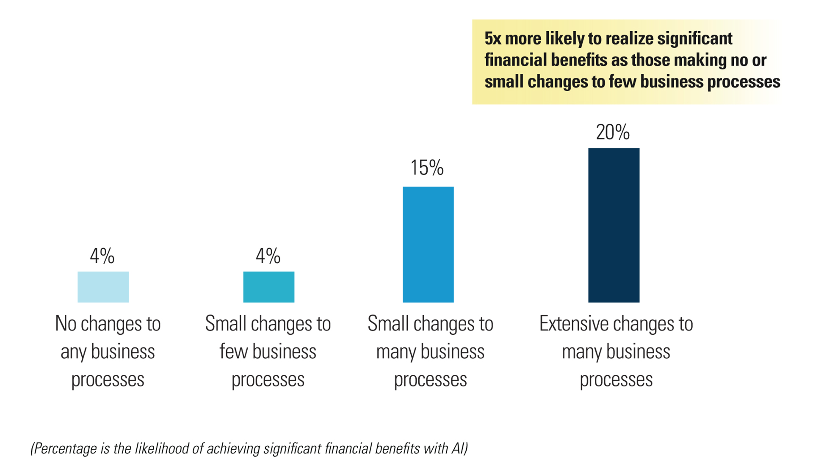

人工智能的魔力-AI 真的有如此大的价值吗？
文章目录
我为什么会写这篇文章？
我的人工智能水平局限于看过周志华的西瓜书，甚至连书本的基础知识都还没有掌握完全。万幸，我至少知道 AI 是怎么一回事。
另一方面，我目前期待主学的领域是大数据底层架构，各类中间件，例如：Dubbo、Kafka、Hadoop 等等，据我所知，现如今有非常多的大公司正利用着上述框架进行机器学习。此时，我作为一名架构师”基层“的开发师，对高层的 AI 抱着极大的好奇心。
本文的主要内容引用于 MIT 的一篇研究报告：EXPANDING AI’S IMPACT WITH ORGANIZATIONAL LEARNING
1. 一个不幸的事实：很少有公司能从 AI 中获益
根据 MIT 的报告，极少公司能从 AI 中获益，如下图所示：

从上图可以看出：2017 - 2020 年以来，越来越多的公司认识到 AI 的重大商业价值，同时有越来越多的公司切实地部署、运行 AI。但是！只有 11% 的公司在其财务报告中声称 AI 为其公司产生了显著的经济效益。
另一方面，该论文还指出绝大多数公司还对 AI 抱有如下的看法：
- 首先，要实现人工智能带来的巨大经济效益，需要的远不止数据、基础设施和人才基础。
- 其次，即使在业务流程中嵌入人工智能也是不够的。
- 第三，人工智能投资的回报不仅限于眼前的财务业绩。经济利益是学习人工智能的结果，而不是唯一的目标。
这三个观点是可以得到很多例子的论证，例如：
- 阿里巴巴在 2020 年的年初抗击新冠肺炎疫情的战役中，利用 AI 算法来履行其社会责任，其声称：2 月 1 日，通过达摩院研发的 AI 算法，疑似病例基因分析时间缩短至半小时。阿里巴巴旗下的阿里云也选择向全球公共科研机构免费开放 AI 算力，加速新冠肺炎疫苗和药物研发；
- 2020 年 8 月 28 日，中国商务部、科技部调整发布《中国禁止出口限制出口技术目录》中追加了若干项内容，包括：基于数据分析的个性化信息推送服务技术，这主要用于限制人工智能算法的出口；
总之，AI 能够真正地使大多数公司获益，道阻且长。庆幸的是，此时的中国互联网公司巨头在 AI 领域已经立于浪潮之巅。
2. 公司从 AI 获益的几点建议
下图是论文所认为能从 AI 中获益的三个建议，这也被称为 Organizational learning（组织学习）。

俗话说得好，三个臭皮匠顶一个诸葛亮。论文认为如下的三个建议对利用 AI 来进行经济获益非常有帮助：
- AI learns from human feedback - 人工智能从人类的反馈中进行学习
- Humans learn from AI - 人类向人工智能学习
- Humans designg AI to learn autonomously - 人类设计人工智能的目的是自主学习
人工智能从人类的反馈中进行学习可以被简单地理解为 “AI 调参”，那么 AI 调参的本质是什么？
最原始的 AI = 数据 + 数学模型。但是数据模型往往并不能直接适用于某一个现有的工业领域，举一个例子：我们在高中做了非常多的椭圆相关的题目，但是如果让你通过这些题目直接计算近日点以及远日点之间的距离差，那么你必须还要翻看物理选修课本上关于地球、太阳椭圆运动模型的章节。数学模型终究不是科学，只有合理地将数学模型应用于数据上，才可以将其称之为科学。
因此，调参并不是一件 low 的事，而是一件必然需要的事情。正如论文中举得例子：DHL 创新副总裁 Gina Chung 说：“人工智能最糟糕的一天是第一天，因为随着时间的推移，算法会变得越来越好。”
人类向人工智能学习则是指我们需要从利用人工智能进行各类决策，因为人工智能够提供人类尚未考虑到的替代方案。现如今很多公司的人工智能部门的主要业务是面向商业用户企业的，也就是俗称的 To B。
人类设计人工智能是为了自主学习指的是高级 AI 算法应当可以在没有人类干预的情况下进行大部分的学习，刚才所说的调参虽然不可避免，但是人并不能 24 小时进行学习，但是人工智能可以。
3. 人类与 AI 互动合作的五种模式
人类使用 AI 的方式即人类与 AI 互动合作，论文指出，主要有五种模式，如下图所示：

正如上图所示，使用最广泛的模式是 AI recommends,human decides 即 AI 提出建议，人类做决定。
虽然上述五种模式使用广泛程度各有不同，但是注意论文的重点并不在于建议我们使用最多人使用的方式，而是建议我们一齐采用上述 5 种模式，如下图所示：

可见，采用多种人机交互模式的公司更有可能通过人工智能实现显著的经济效益。
上述五种模式的具体特点如下：
- AI 决定以及实现：在这种模式下，AI 几乎拥有所有的上下文，可以快速做出决策。人的参与只会减慢原本快速的进程。此模式是最常见的 AI 执行模型，例如 ByteDance 公司通过 AI 算法能够快速地进行违规视频的筛选，AI 判定违规就会拒绝用于的发布视频请求。
- AI 决定，人类实现：AI 通常比人类更能考虑到细节，可以更好地捕捉上下文信息，但是需要人类进行实际的操作。例如，Repsol 公司在海上生产设施中使用这种模式进行人工智能预测维护。人工智能识别有故障风险的部件，并安排维护审查。审查后，人工操作员会考虑部件可用性和定期维护，安排更换。
- AI 推荐，人类决定：这种模式在 ToB 领域很常见，AI 起到了智囊团的作用。此模式适合于必须要做大量重复决策的公司，并且人工智能可以结合大部分（但通常不是全部）的商业环境。例如，Repsol 公司的原油混合人工智能集成并分析了数百万个因素，包括原油类型和炼油厂的操作条件，从而为未来 30 天的混合时间表提供建议。然后，人类根据预期的全球市场状况决定使用哪种混合方案。
- 人类在决策过程中利用 AI 提供洞悉能力：在这种模式下，固有的创造性工作需要人类思考，但人工智能的洞察力可以告知整个过程。在劳动力规划方面，Repsol 的算法将机器学习模型的预测与人类经验和洞察力结合起来，以确定未来的劳动力需求。人力资源经理将这些结果作为招聘和培训计划的输入。
- 人类生存，AI 评估：人类生成许多假想情况，但依赖人工智能来进行冗长的评估，解析出众多复杂的依赖关系。例如，Repsol 使用物理资产(如油井)的数字双胞胎来模拟可能的操作更改的结果并验证假设。使用多种工程和运行效率模型，管理者可以在实际换井之前模拟结果。
论文还指出：公司不仅需要使用这些多模式的人机交互，而且必须能够在这些交互模式之间切换，以适应不断变化的上下文需求。
因此，我们可以得出人机交互模式的 3 点建议：
- 广度：使用尽可能多的 5 种模式；
- 适配性：结合每一种应用上下文来选择最合适的模式；
- 敏捷性：根据需求在多种模式间进行切换；
4. 公司要敢于变革
AI 本身就非常负责，难以掌握，但对于公司来说，遇到的困难不止如此。公司的管理需要适应与人工智能相互学习导致的过程变化，但这种适应并不容易实现。
正如 Wharton School 的技术与数字商业教授 John C 指出：人工智能是一个巨大的转变，公司需要有长远的眼光，愿意在短期内承受很多打击，接受失败，并继续投资。
这反映了企业需要从另一个方面学习人工智能。例如，他们需要认识到人工智能可能引发的潜在不适。他们需要了解人工智能的改进何时抵消了不适。他们需要学习如何与人工智能合作，不仅仅是在个人层面，而是在整个组织层面。
下图展示了公司业务流程引入 AI 后能够切实得到益处的可能性：

可见，所有采用或即将人工智能技术的公司都将面临不少阻力，只有为引入 AI 做出巨大改革，公司才更有可能从中获益。